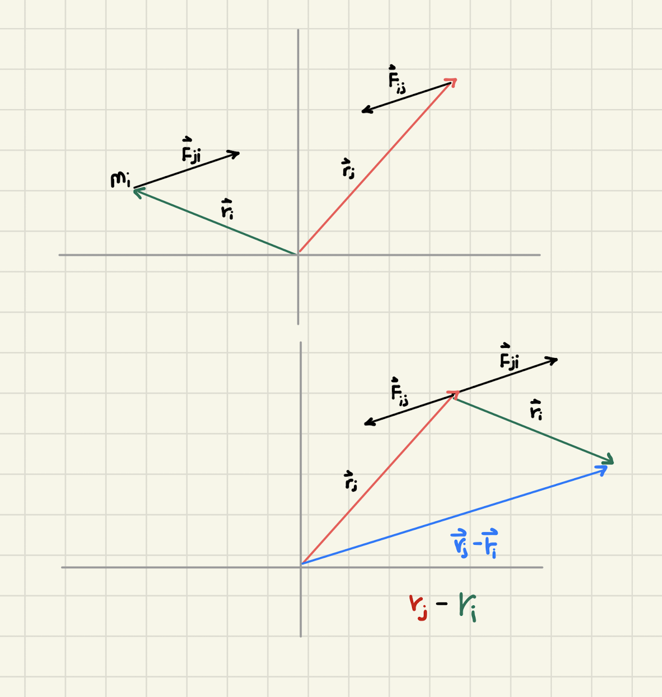

Backlinks
1 External Torque
Proof:
\begin{equation} \vec{\tau}_{total\ ext} = \frac{d \vec{L}_{system}}{dt} \end{equation}According to the work that is already done, we have that:
\begin{equation} \frac{d \vec{L}_{system}}{dt} = \vec{\tau}_{tot\ ext} + \sum_{1 \leq i < j \leq N} \left[ (\vec{r}_i \times \vec{F}_{j \to i}) + (\vec{r}_j \times \vec{F}_{i \to j}) \right] \end{equation}The left expression \(\vec{\tau}_{tot\ ext}\) already achieves what we want in terms of the final expression, so the right expression must cancel to \(0\).
We first begin by recognizing, by Newton's Third Law, \(\vec{F}_{i\to j} = -\vec{F}_{j\to i}\) as long as both objects are within the system. Therefore, we will first begin by making this substitution below:
\begin{align} (\vec{r}_i \times \vec{F}_{j \to i}) + (\vec{r}_j \times \vec{F}_{i \to j}) = (\vec{r}_j \times \vec{F}_{i \to j}) -(\vec{r}_i \times \vec{F}_{i \to j}) \end{align}We further understand that the cross-product is distributive across addition; therefore:
\begin{align} (\vec{r}_i \times \vec{F}_{j \to i}) + (\vec{r}_j \times \vec{F}_{i \to j}) &= (\vec{r}_j \times \vec{F}_{i \to j}) -(\vec{r}_i \times \vec{F}_{i \to j})\\ &= (\vec{r}_j-\vec{r_i}) \times \vec{F}_{i \to j} \end{align}At this point, we realise that a vector \(\vec{r_i}\) subtracted from \(\vec{r_j}\) is a vector \(i \to j\), which would be parallel to \(\vec{F}_{i \to j}\). As such, their cross products would be zero.
Completing the proof, then:
\begin{align} \frac{d \vec{L}_{system}}{dt} &= \vec{\tau}_{tot\ ext} + \sum_{1 \leq i < j \leq N} \left[ (\vec{r}_i \times \vec{F}_{j \to i}) + (\vec{r}_j \times \vec{F}_{i \to j}) \right] \\ &= \vec{\tau}_{tot\ ext} + \sum_{1 \leq i < j \leq N} 0 \\ &= \vec{\tau}_{tot\ ext} + 0 \\ &= \vec{\tau}_{tot\ ext}\ \blacksquare \end{align}
2 Two Rotating Point Masses
We do this problem by calculating the angular momentum of each of the \(m_{\{1,2\}}\), and adding the angular accelerations together.
The system is given by this figure:

We define a coordinate such that the "figure"'s left is the negative y direction, the "figure"'s right is the positive y direction. The side "outside" the page is the positive x direction, and the side "inside" the page is the negative x direction.
2.1 Angular Momentum from \(m_1\)
We begin with the expression for tangential velocity, which is simply \(R \omega\).
Therefore:
\begin{align} \vec{V} &= (R\hat{j})(\omega \hat{k}) \\ &=(R\omega) (\hat{j}\hat{k})\\ &=R\omega \hat{i} \end{align}We will supply this expression for that of the angular momentum: \(\vec{R} \times m\vec{V}\):
\begin{align} \vec{L} &= \vec{r} \times m\vec{V} \\ &=(-R\hat{j} + h\hat{k}) \times m(R\omega \hat{i})\\ &=-R\hat{j}\times mR\omega \vec{i} + h\hat{k}\times mR\omega \vec{i} \\ &=-mR^2\omega (\hat{j}\times\hat{i}) + h mR\omega (\hat{k}\times\hat{i}) \\ &=mR^2\omega \hat{k} + h mR\omega \hat{j} \end{align}2.2 Angular Momentum from \(m_2\)
The calculations here is essentially almost the same. We just need to take a few sign changes as \(R\) in \(m_2\) is in the opposite direction as \(R\) in \(m_1\).
Therefore:
\begin{align} \vec{V} &= (-R\hat{j})(\omega \hat{k}) \\ &=(-R\omega) (\hat{j}\hat{k})\\ &=-R\omega \hat{i} \end{align}And, as with before, we supply it to the previous expression.
\begin{align} \vec{L} &= \vec{r} \times m\vec{V} \\ &=(R\hat{j} + h\hat{k}) \times m(-R\omega \hat{i})\\ &=R\hat{j}\times -mR\omega \vec{i} + h\hat{k}\times -mR\omega \vec{i} \\ &=-mR^2\omega (\hat{j}\times\vec{i}) - h mR\omega (\hat{k}\times\vec{i}) \\ &=mR^2\omega \hat{k} - h mR\omega \hat{j} \end{align}2.3 Summing the \(\vec{L_i}\) s
We will now sub the two \(\vec{L_i}\) s together:
\begin{align} \vec{L}_1 + \vec{L}_2 &= mR^2\omega \hat{k} + h mR\omega \hat{j} +mR^2\omega \hat{k} - h mR\omega \hat{j} \\ &= mR^2\omega \hat{k} +mR^2\omega \hat{k} + h mR\omega \hat{j} - h mR\omega \hat{j}\\ &= 2mR^2\omega \hat{k} + 0\\ &= 2mR^2\omega \hat{k}\ \blacksquare \end{align}3 Rigid Body Generalization
3.1 N-Mass Formula
We will think about a single mass \(m_i\) in isolation. We will use \(\ell_i\) to represent the perpendicular distance from \(m_i\) to \(\hat{k}\).
We begin by analyzing some \(m_i\), and add all \(m_i\) together.
3.2 The angular momentum of \(m_i\)
For every object \(m_i\), we take it being arranged at some \(\theta\) between \(\hat{i}\) and \(\hat{j}\). We will perform the same procedures as with above to calculate angular momentum.
\(\ell_i\) is angled between \(\hat{i}\) and \(\hat{j}\). Specifically, it is located at:
\begin{equation} \ell_i = cos(\theta) \ell_i\hat{i} + sin(\theta) \ell_i\hat {j} \end{equation}We will calculate the tangential velocity, as usual:
\begin{align} \vec{V} &= (cos(\theta) \ell_i\hat{i} + sin(\theta) \ell_i\hat {j})(\omega \hat{k}) \\ &= cos(\theta)\ell_i(\omega \hat{k}) \hat{i} + sin(\theta)\ell_i(\omega \hat{k}) \hat {j}\\ &= cos(\theta)\ell_i\omega (\hat{k} \hat{i}) + sin(\theta)\ell_i\omega (\hat{k} \hat {j})\\ &= cos(\theta)\ell_i\omega \hat{j} - sin(\theta)\ell_i\omega \hat{i} \end{align}And, as with before, we will supply it to the expression for angular momentum.
\begin{align} \vec{L} &= \vec{r} \times m\vec{V} \\ &=(cos(\theta)\ell_i \hat{i} + sin(\theta)\ell_i \hat {j} + h\hat{k}) \times m(cos(\theta)\ell_i\omega \hat{j} - sin(\theta)\ell_i\omega \hat{i})\\ &=(cos(\theta)\ell_i \hat{i} + sin(\theta)\ell_i \hat {j} + h\hat{k}) \times (mcos(\theta)\ell_i\omega \hat{j} - msin(\theta)\ell_i\omega \hat{i}) \end{align}We will now compute the actual cross product:
\begin{align} \vec{L} = &(hmcos\theta \ell_i \omega) \hat{i} +\\ &(hmsin\theta\ell_i \omega)\hat{j} +\\ &(m\omega(cos\theta \ell_i)^2 + m\omega(sin\theta \ell_i)^2)\hat{k} \end{align}Let's expand the last term slightly:
\begin{align} &m\omega(cos\theta \ell_i)^2 + m\omega(sin\theta \ell_i)^2\\ =&m\omega(cos\theta \ell_i)^2 + m\omega(sin\theta \ell_i)^2\\ =&m\omega\ cos^2\theta {\ell_i}^2 + m\omega\ sin^2 \theta {\ell_i}^2\\ =&m\omega(1-sin^2\theta) {\ell_i}^2 + m\omega\ sin^2 \theta {\ell_i}^2 \\ =&m\omega{\ell_i}^2- m\omega{\ell_i}^2sin^2\theta + m\omega\ sin^2 \theta {\ell_i}^2 \\ =&m\omega{\ell_i}^2 \end{align}And therefore, we can re-write the following expression for \(\vec{L}\):
\begin{align} \vec{L} = &(hmcos\theta \ell_i \omega) \hat{i} +\\ &(hmsin\theta\ell_i \omega)\hat{j} +\\ &m\omega{\ell_i}^2\hat{k} \end{align}3.3 Angular momentum of the system
Therefore, the total momentum of the system would be:
\begin{align} \vec{L} = \sum^N_{i=1} \left(hm\ cos\left(\frac{2\pi i}{N}\right) \ell_i \omega\right) \hat{i} +\left(hm\ sin\left(\frac{2\pi i}{N}\right)\ell_i \omega\right)\hat{j} +m\omega{\ell_i}^2\hat{k} \end{align}At this point, we need to remember the fact that the points in the generalized formula we are to derive are axially symmetric. This means that the components \(cos{\theta} \hat{i}\) and \(sin(\theta)\hat{j}\) will, pairwise, cancel each other out.
\begin{align} \vec{L} &= \sum^N_{i=1} \left(hm\ cos\left(\frac{2\pi i}{N}\right) \ell_i \omega\right) \hat{i} +\left(hm\ sin\left(\frac{2\pi i}{N}\right)\ell_i \omega\right)\hat{j} +m\omega{\ell_i}^2\hat{k}\\ &=\sum^N_{i=1} 0 +m\omega{\ell_i}^2\hat{k}\\ &=\sum^N_{i=1} m\omega{\ell_i}^2\hat{k}\\ &=\hat{k}\omega\sum^N_{i=1} m{\ell_i}^2 \end{align}3.4 Actual Integral Expression
Our object has total mass \(M\) and volume \(V_0\). We will now determine an integral expression for its angular momentum.
So far, we have that:
\begin{equation} \vec{L}=\hat{k}\omega\sum^N_{i=1} m{\ell_i}^2 \end{equation}We will convert \(\ell_i = \ell(m)\), a function in terms of differential mass \(m\) that maps mass to the distance from \(z\) axis \(\ell\).
Hence:
\begin{align} \vec{L}&=\hat{k}\omega\sum^N_{i=1} m{\ell_i}^2\\ &=\hat{k}\omega\int_V {\ell}^2dm\\ &=\hat{k}\omega\int_V {\ell}^2\frac{dm}{dv} dV\\ &=\hat{k}\omega\int_V {\ell}^2\frac{M}{V_0} dV \end{align}In our last step, we can see that the ratio between differential \(\frac{dm}{dv}\) can be equivalent—as all components of this system are point masses—to the overall \(\frac{M}{V_0}\).
4 The Rod
In this problem, we essentially have a line of aligned infinitesimal point masses around the -center.
For every point \(i\), we understand that its tangential velocity can be modeled by:
\begin{align} \vec{V} &= (\ell_i\hat{j})(\omega \hat{k}) \\ &=(\ell_i\omega) (\hat{j}\hat{k})\\ &=\ell_i\omega \hat{i} \end{align}We again supply this expression into that for \(\vec{L}\):
\begin{align} \vec{L_i} &= \vec{r} \times m_i\vec{V} \\ &=(\ell_i \hat{j} + h\hat{k}) \times m_i \ell_i \omega \hat{i}\\ &=\ell_i m_i \ell_i \omega (\hat{j}\times \hat{i}) + h m_i \ell_i \omega (\hat{k}\times\hat{i})\\ &= -h m_i \ell_i \omega \hat{j}+{\ell_i}^2 m_i \omega \hat{k} \end{align}To figure the actual momentum, we will have to sum the momentums for all \(i\):
\begin{equation} \vec{L} = \sum_i \vec{L_i} = \sum_i \left(-h m_i \ell_i \omega \hat{j}+{\ell_i}^2 m_i \omega \hat{k}\right) \end{equation}Of course, to actually perform the summation, we integrate over each differential mass:
\begin{align} &\int_L \left(-h \ell \omega \hat{j}+\ell^2 \omega \hat{k}\right) dm\\ =&\omega \int_L \left(-h\ell \hat{j}+\ell^2 \hat{k}\right) dm\\ =&\omega \int_L \left(-h\ell \hat{j}+\ell^2 \hat{k}\right) \frac{dm}{dl} dl\\ =&\omega \int_L \left(-h\ell \hat{j}+\ell^2 \hat{k}\right) \lambda dl\\ =&\omega \lambda \int_L \left(- h\ell \hat{j}+\ell^2 \hat{k}\right) dl \end{align}We now supply the integral with actual bounds: \([-\frac{L}{2}, \frac{L}{2}]\).
\begin{align} &\omega \lambda\int_L \left(- h\ell \hat{j}+\ell^2 \hat{k}\right) dl \\ =&\omega \lambda\int_{-\frac{L}{2}}^{\frac{L}{2}} \left( -h\ell \hat{j}+\ell^2 \hat{k}\right) dl \\ =&\omega \lambda \left(\int_{-\frac{L}{2}}^{\frac{L}{2}}-h\ell \hat{j}dl+\int_{-\frac{L}{2}}^{\frac{L}{2}}\ell^2 \hat{k} dl \right)\\ =&\omega \lambda \left(h\hat{j}\int_{-\frac{L}{2}}^{\frac{L}{2}}\ell dl-\hat{k}\int_{-\frac{L}{2}}^{\frac{L}{2}}\ell^2 dl \right)\\ =&\omega \lambda \left\left(-h\hat{j}\frac{\ell^2}{2} +\hat{k}\frac{\ell^3}{3} \right)\right|_{-\frac{L}{2}}^{\frac{L}{2}}\\ =&\omega \lambda \left(-h\hat{j}\frac{\frac{L}{2}^2}{2} +\hat{k}\frac{\frac{L}{2}^3}{3} \right)-\left(-h\hat{j}\frac{\frac{-L}{2}^2}{2} +\hat{k}\frac{\frac{-L}{2}^3}{3} \right)\\ =& 2\frac{L^3}{24} \omega \lambda \hat{k}\\ =& \frac{L^3}{12} \omega \lambda \hat{k} \end{align}We continue be realizing that \(\lambda = \frac{M}{L}\). Supplying that to the equation:
\begin{align} & \frac{L^3}{12} \omega \lambda \hat{k} \\ =& \frac{L^3}{12} \omega \frac{M}{L} \hat{k} \\ =& \frac{L^2}{12} M \omega \hat{k} \\ =& \frac{1}{12}L^2M \omega \hat{k} \end{align}5 The Disk
Our original expression for the momentum in the system is the same.
\begin{align} \vec{L_i} &= \vec{r} \times m_i\vec{V} \\ &=m\omega{\ell_i}^2\hat{k} \end{align}We will have to add the angular momentum in two directions to get that of a disk:
\begin{equation} \vec{L} = \sum_i \vec{L_i} = \sum_A \vec{L_i} \end{equation}where, \(A\) is the area of the surface.
To begin doing this, we will construct the differential operator for a disk. We understand the circumference of the circle is \(2 \pi r\) for some radius r. Furthermore, for a small ring with infinitesimal thickness \(dr\), it has an area of \(2\pi r dr\).
Therefore:
\begin{equation} da = 2\pi r dr \end{equation}We finally want to find the expression for differential mass. Of course, it is simply the mass density \(\frac{dm}{da}\) multiplied by the value of \(da\).
\begin{align} dm &= \frac{dm}{da}\ da\\ &= \sigma\ da \\ &= \frac{M}{\pi R^2} da\\ &= \frac{M}{\pi R^2} 2\pi r dr\\ &= \frac{2 rM}{R^2} dr \end{align}We can now finally take the integral:
\begin{align} &\int_{0}^{R} \vec{L}_i \\ \Rightarrow &\int_{0}^{R} \omega r^2\hat{k}\ dm\\ \Rightarrow &\int_{0}^{R} \omega r^2\hat{k} \frac{2 rM}{R^2} dr\\ \Rightarrow &\int_{0}^{R} \omega \hat{k} \frac{2 r^3M}{R^2} dr\\ \Rightarrow &\frac{2 M \omega }{R^2} \hat{k}\int_{0}^{R} r^3 dr\\ \Rightarrow &\frac{2 M \omega }{R^2} \hat{k} \left(\left\frac{r^4}{4}\right|_0^R\right)\\ \Rightarrow &\frac{2 M \omega }{R^2} \hat{k} \frac{R^4}{4}\\ \Rightarrow &\frac{2 M \omega }{R^2} \hat{k} \frac{R^4}{4}\\ \end{align}